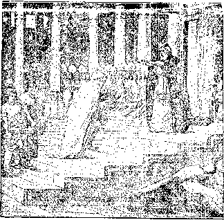

Vol. VIII. BROOKLYN, N. Y. No. 4
FACTS FOIL. THE ASSASSINATION
OF PASTOR RUSSELL’S
CHARACTER.
A post-card request brings free to any one who doubts Pastor Russell’s purity of life and sincerity of purpose, a clear cut statement of the facts at issue. Address Watch Tower, Brooklyn, N. Y.
Those, who read carefully and get the benefit of the pure spiritual atmosphere into which Pastor Russell leads them, need not be told that the many vile printed and pulpit attacks are wholly false and merely the desperate efforts of opponents whose nefarious schemes to keep the people in ignorance of the truth on all subjects Pastor Russell is so fearlessly and thoroughly exposing.
It is for this reason that the millions of newspaper readers continue to enjoy Pastor Russell’s pen products and are not being influenced by any of the so-called news reports with scareheadlines, some of which, if even partially true, would have sent Pastor Russell to prison long ago; but the fact is that not a soul on earth has the slightest cause for grievance against Pastor Russell, except that he is telling the common people truths the clergy wish them not to know.
That the great European war is the beginning of God’s judgment upon the nanons of Christendom -is —ieecrg-nized by many serious minded men of the world, as well as by Bible Students. All are aware that “Christendom” has much to answer for; but just why this present generation should be called upon to suffer more than any other is a problem which some may not fully understand. The justice of the Time of Trouble upon the nations of our day should be appreciated when we recognize the fact that we stand to-day in a period Which is the culmination of ages of experience which should be, and is, in some respects, greatly to the world’s profit; especially to that part of the world which has been favored, directly and indirectly, with the light of Divine Truth—Christendom, Babylon—whose responsibility for this stewardship of advantage is consequently very great. God holds men accountable, not only for what they know, but for what they might know if they would apply their hearts unto instruction—for the lessons which experience (their own and others’) is designed to teach; and if men fail to heed the lessons of experience, or wilfully, neglect or spurn its precepts, they must suffer the consequences.
Before so-called Christendom lies the open history of all past time, as well as the Divinely inspired revelation. And what lessons they contain! lessons of experience, of wisdom, of knowledge, of grace, and of warning. By giving heed to the experiences of preceding generations along the various lines of human industry, political economy, etc., the world has made very commendable progress in material things. Many of the comforts and conveniences of our present civilization have come to us largely from applying the lessons observed in the experiences of past generations. The art of printing has brought these lessons within the range of every man. The present generation in this one point alone has much advantage every way: all the accumulated wisdom and experience of the past are added to its own. But the great moral lessons which men ought also to have been studying and learning have been very generally disregarded, even when they have been emphatically forced upon public attention. History is full of such lessons to thoughtful minds inclined to righteousness; men of the present day have more such; lessons than those of previous generFstions, and this generation must suffer for its neglect.
THE MELCHISEDEC PRIESTHOOD
GREAT PURPOSE FOR WHICH IT IS ORDAINED.
WHO WAS MELCHISEDEC? “WITHOUT FATHER, WITHOUT MOTHER.” MELCHISEDEC AND AARONIC ORDERS OF PRIESTS CONTRASTED. MEMBERSHIP LIMITED. THEIR FUTURE WORK.
“No man taketh this honor to himself, but.he that is called of God, as was Aaron.... “Thou art a Priest forever after the order of Melchisedec."—Hebrews 5:4-6.
THE Apostle’s statement forming the above texts is made in connection with his discussion of the Mosaic arrangement and the Aaronic Order of priesthood. Christ, while on earth, could not be a priest, because there was already a priesthood ordained of God—the family of Aaron. No Israelite could take part in this priesthood except he were of Aaron’s lineage. To presume to take part in it without God’s invitation would be a sin. To this day the Jews respect the Aaronic priesthood, and no one could serve as a priest unless he could show his genealogy back to Aaron. The Jews now do not know who belongs to the priestly family. Therefore they have no priest and no such service as a priest would render.
In his Epistle to the Hebrews St. Paul calls attention to another priesthood. He declares that Jesus, who T/C2- ■.T tribG-• Of - Ho™ .
come a Priest of a still higher Order than the Aaronic; moreover, that God had foretold our Lord’s Priesthood long before. (Psalm 110:4.) His was a Divine appointment to this Priesthood. The call to be the Messiah and the highest of all priests was from the Father.
Here we have another proof that our Lord Jesus was not the Father. He could have only such honors as the Father would give Him. God glorified Him in giving Him this great Priesthood. The Apostle quotes from the Prophet David respecting Jesus, “Thou art a Priest forever after the Order of Melchisedec.”
Who Was Melchisedec?
Melchisedec was a great personage who lived in Abraham’s day. So great was he that, after Abraham had won a great victory and wished to show his appreciation of God’s goodness, the patriarch came to Melchisedec, “king of Salem and priest of the Most High God,” and offered tithes of all he had captured.—Gen. 14:18-20.
Melchisedec is supposed to have been one of the Shepherd Kings who invaded Egypt and built the Great Pyramid, covering twelve acres, known for ages as one of the Seven Wonders of the world—about 2170 B. C.
How much higher than Aaron must he have been who was a type of Christ and of Christ’s Priesthood in glory?
Melchisedec was not a priest who offered sacrifices in a linen robe; he was a priest who was at the same ti .e a king—“A priest upon his throne.” As such his position was higher in the type than the position of Aaron; for Aaron was a descendant of Abraham, and Abraham, great as he was as the patriarch jjnd father of Israel and of the Aaronic Order of Priests, paid tithes to .Melchisedec and received a blessing at his hands. Thus was typified, as the Apostle explains, that the priesthood of sacrifice (the Aaronic) represents a lower plane or condition than the higher priesthood df king-ship—the Melchisedec order. Melchisedec, priest and king, therefore, represented The Christ jCJesus and His Church) in glory and power, whereas the Aaronic order specially pictured the redemptive sacrifice of our Lord and the share which the Church has with Him in that sacrifice.
“Without Father or Mother.”
We read of Melchisedec that, as a priest, he was without father, without mother, without descent, and that neither his beginning of days nor end of life are recorded in the genealogies. (Heb. 7:3, 6, Syriac.) Likewise the priesthood of which Jesus is Head does not trace its lineage to any human source. This fact is strikingly typified in Melchisedec, whose lineage and death have purposely not been recorded. He was a priest without having inherited the office from his father or his mother, thereby picturing Christ’s priesthood, which came not of the lineage of the flesh, as did the Aaronic priesthood, which natural Israel thought to be the real. Melchisedec’s death was not recorded nor a successor named, that thus might be typified the continuity of Christ’s Royal Priesthood.
>
MELCHISEDEC, PRIEST AND KING
In the Melchisedec type the work of sacrifice is not shown, as he represented The Christ glorified and reigning after the work of sacrifice had been completed. The Aaronic priesthood furnished typical illustrations of the sacrifices and sufferings of Christ (Head and Body) and the blessings to follow, but it did not completely illustrate' the glorious, everlasting and unchangeable character of this Royal Priesthood during the Millennial Age. For this cause Melchisedec was presented as a type, that thus might be shown his glorious office of priest and king combined. Here, too, the Body of Christ is no longer shown as separate individuals, but as one, complete. In the work of sacrifice, as represented in Aaron and his under priests, we have seen them more dr less separately sacrificing; but all of the Church will share unitedly with their Head (Jesus) in the future glory repre-sen d in Melchisedec alone.
We see that our Heavenly Father has conferred a very great honor upon our Lord Jesus Christ, in appointing Him to be the world’s great Redeemer, High Priest and King. He is the One through whom v-ill come all the blessings upon the world that God has designed. But before God could recognize Him in that position, He must prove our Lord., as the Bible declares.
“Worthy to Loose the Spals.”
Elsewhere St. Paul points out that our Lord Jesus left the glcTy which He had with the Father before the world was and took upon 'Him the form of a servant; and being found in fashion as a man, He humbled Himself still further—all that He might do the Father’s will. His obedience to the Father finally led to the Cross. “Wherefore God hath highly exalted Him, and given Him a name that is above every name, that at the name of Jesus every knee should bow.” (Philippians 2:5-11.) In that exalted position He is the Antitype of Melchisedec.
This is corroborated by our Lord’s own statement in the Fifth Chapter of the Revelation. There is pictured the Father, seated upon the Throne of Glory and holding in His right hand a Scroll, written within and without and sealed with seven seals. This Scroll represented the Divine Plan that God had purposed in Himself before the foundation of the world. What was in that Scroll nobody knew but Himself. The entire Plan was in God’s own power; and, foundation of the world the Father foreknew that our Lord would be the One wGhy to open the Scroll.
Throughout Heaven and earth the proclamation was made, “Who is worthy to loose the seals and to look therein?” Nobody came forward. Then St. John began to weep. After he had wept much, an angel touched him and said, “Weep not. The Lion of the tribe of Judah hath prevailed.” The Lion of Judah .was the Strong One of Judah, of which tribe God had prophetically declared that Messiah should come—of David’s lineage. Here was the Strong One, competent to do the work—absolutely perfect.
The difficulty with every other person in the world was that all were imperfect. But Jesus was sent into the world with all the qualities of perfection—in the image of God. When He became the Man Christ Jesus, He was qualified to. fulfil the Divine Purpose. But He must be tested. No one heretofore had proven worthy, because the conditions that God had attached to the honor were very stringent. God was looking for One competent to be entrusted with the charge of affairs—a Prime Minister, as it were. One who would fully represent Him in the Kingdom work and be associated with Him forever. For so high a position God had purposed that this One should be made partake of the Divine nature.
immortality—“Life in Himself.”
The Scriptures tell us that God has immortality; i. e., He is not liable to death. All the angels are mortal; not that they are dying, but that they could die. A mortal is not a dying person, but one liable to death. God has supplies to continue existence to those who will be obedient and loyal to Him. To all such He is pleased to grant everlasting life. ‘ But He is immortal, not susceptible to death in any sense. He is not dependent upon food, water, air, rest or anything else. Jesus says, “As the Father hath life in Himself, so hath He given to the Son to have life in Himself.” (John 5:26.) This is so high as to be beyond human comprehension.
God purposed that this One whom He would so highly exalt should also have this quality of immortality—life in Himself. But first He must demonstrate His loyalty to the fullest degree. Jehovah determined that the first opportunity to prove worthiness Of this position should be given to (Continued on Page 2, Column 2.)
W. F. HUDGINGS, Editor
13, 15, 17, HICKS ST., Brooklyn,N^Y. Monthly-12cts. a year. Single copies 1c.
An ‘ndepeident, Unsectarian Religious Newspaper, Specially Devoted to the Forwarding of the Laymen’s Home Missionary Movement for the Glory of God and Good of Humanity.
Ministers of the I. B. S. A. render their services at funerals free of charge. They also invite correspondence from those desiring Christian counsel.
THEY CRIED “PEACE! PEACE!”
BUT THERE WAS NO PEACE.
The peace movements of the past forty years having ended in the greatest war in all human history, call forcefully to mind the prophetic statement of the Apostle Paul concerning events that would lead up to the establishment of Messiah’s Kingdom: “For when they shall say, Peace and safety; then sudden destruction cometh upon them.” (1 Thessalonians 5:3.) For many centuries, through the holy prophets, God has foretold the Time of Trouble with which this Age shall end; and no number of peace congresses nor peace palaces could avert the inevitable disaster. Many realized this—“their hearts failing them for fear, looking unto the things coming upon the earth”— and their loud proclamations of Peace! Peace! often bore the stamp of insincerity and empty boastfulness. During a great peace demonstration sojne years ago the situation was ably summed up by the poet Whittier in verse which can now be appreciated much better than at the time it was written:
“ ‘Great peace in Europe! Order reigns
From Tiber’s hills to Danube’s plains!’
So say her kings and priests; so say The lying prophets of our day.
“Go lay to earth a list’ning ear;
The tramp of measured marches hear,
The rolling of the cannon’s wheel, The shotted musket’s murd’rous peal, The night alarm, the sentry’s call, The quick-eared spy in hut and hall, From polar sea and tropic fen The dying groans of exiled men, The bolted cell, the galley’s, chains, The scaffold smoking with its" stains! Gxder,—tne nusn Oi brauuiag slaves. Peace,—in the dungeon vaults and graves! „ . x
Speak, Prince and Kaiser, Priest and Czar J
If this be peace, pray, what is war?
“Stern herald: of Thy better day, Before Thee to prepare Thy way
The Baptist shade of Liberty,—
Gray, scarred and hairy-robed must press
With bleeding feet the wilderness!
O that its voice? might pierce the ear Of priests and princes while they
A cry as of the Hebrew seer :
Repent! God’s Kingdom draweth near.”
A correct understanding of this subject is almost a necessity to Christian steadfastness. For centuries it has been the teaching of “orthodoxy,” of all shades, that God, before creating man, had created a great abyss. of fire and terrors, capable of containing all the billions of the human family which He purposed to bring into being; that this abyss He had named “hell;” and that all of the promises and threatenings of the Bible were, designed to deter as many as possible (a “little flock”) from such wrong-doing as would make this awful place their perpetual home.
Guided by the Lord’s providence to a realization that the Bible has been slandered, as well as its Divine Author, and that, rightly understood, it teaches nothing derogatory to God’s character nor to an intelligent reason, ■we have issued a booklet laying bare the Scripture teaching on this subject. We believe that whoever shall hereby find his false view rested upon human misconceptions and misinterpretations will, at the same time, learn to trust hereafter less to his own and other men’s imaginations and, by faith, to grasp more firmly the Word of God, which is able to make wise unto salvation, and on this mission, under God’s providence, it is sent forth.
WHAT SAY THE SCRIPTURES ABOUT HELL ?
This interesting pamphlet of 96 I pages explains every verse in the Bible in which the original words are I found that are translated into the [ English as “Hell.” Price, 10c. post j paid. Address I. B. S. A., 15 Hicks I Street, Brooklyn, N. Y. I (Contintiied from 1st page, 4th column.) THE M'ELCHISEDEC PRIESTHOOD, the Logos, “The Word,” the One first created by the Father. (Revelation 3:14; Colossians 1:15; John 1:1-3.) Those who believe in the doctrine of the Trinity hold many very unreasonable views. They say that Jesus did 'not become a man, that He merely hid Himself in a human form for a time. Not so says the Bible. Our Trinitarian friends are driven to some very ridiculous positions by claiming that Jesus was coequal with the Father, a very un-scriptural claim.
The yon of God left the glory which He had with the Father, was made flesh and dwelt amongst us. He was no ordinary man, no sinful man. We beheld in Him a glory that no other man had—a glory of perfection. (John 1:14; Hebrews 7:26.) He became a man fcr the very purpose of carrying out the Father’s Plan, which He could not then fully know. He knew that the first step of prepara tion was to be made a man. The next step was to present Himself for sacrifice. From those who interpreted the Law, He knew that there was nothing that He could do in His priestly office until He was thirty years old. When His thirtieth anniversary came, He presented Himself to the Father in consecration and was baptized by John.
“The Heavens Were Opened to Him.”
There, at Jordan, the Father granted the Son the opening of His eyes of understanding. There He became the slain Lamb. At the very moment He made His consecration at Jordan He died, so far as His covenant with God was concerned. And so it is with His followers. The very moment we make our covenant with God, we are dead—dead to sin and to all earthly interests. Our death dates not from the time we actually die, but from the time we give up our will. So God there counted Jesus dead. He was the sacrificial Lamb. To Him was given the right to open the Scroll.
So we read that at His baptism, when the Holy Spirit descended upon our Lord, “the Heavens [the higher things] were opened unto Him.” (Matthew 3:16). The deeper things of God’s Plan became open to His mind. Never before had He seen the meaning of these things. They were hidden from Him, as from any natural man. The natural man—whether perfect ..or, jnjperfect, “i;eceiveth not the tilings of the Spirit of God; neither can he know them, because they are spiritually discerned.” (1 Corinthians 2:14.) Jesus became a perfect natural man, and as such He gave all that He had in consecration. Then God begat Him of the Holy Spirit to the new nature. From the moment of spirit-begetting, old things passed away and all things became new.
After Jesus had received the Holy Spirit, He went immediately into the wilderness for forty days. During that time He was a Bible Student, thinking over the Scriptures, which from boyhood He had heard read in the synagogue. Having now received the illumination of the Holy Spirit, He could understand what was meant by the manna in the wilderness, by the serpent erected upon the pole, by the bullock of the Atonement Day sacrifices and by the Passover Lamb. The whole Plan of God for human salvation was opened to Him. He had “loosed the seven seals.” By that time He fully understood all that He was to suffer. He saw that He was to give up His life sacrificially, that He was to be crucified.
Then, after all the stress of Bible study for forty days without food, the Devil came and tempted Him. This was the opportunity, in His weakened physical condition, for the Adversary to present a temptation. But our Lord withstood all of Satan’s suggestions, and finally the Devil left Him. We have no record that Satan ever again tried to tempt our Lord.
God thoroughly proved the One who was to be the great Antitype of Melchisedec, the Priest upon His Throne, partaker of the Divine nature. And Jesus demonstrated His worthiness, not only during those forty days in the wilderness, but during the following three and a half years, clear down to Calvary—even to the death of the Cross. Now He is the highly exalted One, far above angels, principalities, powers and every name that is named. He is at the Father’s right hand—the chief place of favor. Our Lord Jesus is 'God’s great Prime'Minister—next to the Father Himself.
Further Contents of the Scroll.
But the Scroll in God’s hand contained more than this. It showed that the Father, who had called the Lord Jesus, had called Him tb be the Head over a ? Church, which is His Body. Nineteen hundred years before the Messianic Kingdom was due to be set up, God sent Jesus into the world that He might open up the way and that Jews and Gentiles might come in and participate with Jesus, first in the tests and afterwards in the honor. In the Book it is written that not only a bullock, but also a Lord’s goat must be offered in sacrifice on the Atonement Day. Thus the Church are to be sharers in the sufferings of Christ and in the glory to follow.—Hebrews 13:11-13.
So all the work of this Gospel Age has been with a view to perfecting this company. First the Call went to such Jews as were ready, that these might be brought into the Church, to be of the Spiritual Seed of Abraham. But there were not enough of them; and so the door was thrown open to the Gentiles, that as many of them as desired might come in and be fellowheirs with the Jews. All these are to be members of the Body of the great antitypical Priest and King, “after the order of Mechisedec.”
God is now calling merely the class that is anxious to come to Him. The Apostle speaks of some who were feeling after God, if haply they might find Him. (Acts 17:27.) Now there is only one way to come to Plim, and that way is by membership in the Body of Christ. Those who will walk in this narrow way shall become jointheirs with Christ. Some say, “I thimt that I will wait a little while.” They are not altogether ready to sacrifice—to give up all to the Lord. To such the Lord says, “Very Well!” Jesus said to some in His day, “Sit down and count the cost.” It is better that one should not put his hand to the plow than that he should do so, and then look back and wish that he were not there.
“If any man will come after Me [be My disciple], -let him deny himself, take up his cross and follow Me.” So then we see the conditions of discipleship. And whatever the Father’s providence may be tor us, we wish to have. Jesus did not specify what was to come to Him. The’ Father had specified our Lord’s experiences before the foundation of the world. As for you and for me, our part is to do the Father’s will—to drink whatever cup the Father shall pour for us. He does not give us the honor of drinking so great a cup as our Savior drank, however.
“Gather Together My Saints Unto Me.”
For each consecrated child of God the great question is, “Am .1 walking in the steps of Jesus-?” Have we entered into a Covenant with God, as our Lord did? Faithful is He who has called us. If we fail to get the great Prize of our High Calling, the fault will be ours alone. God is ready to do for us as He was ready to do for Jesus.
A GOOD SOLDIER OF CHRIST
“Endure hardness as a good soldier
THE name soldier, applied in the Bible to the followers of Jesus Christ, is an appropriate one; for it implies a special enlistment, or contract for service—a contract in which the life is freely offered, a contract in which the individual is under rigid discipline, and in which his will is entirely ignored and the will of the Divine Government, as expressed through the “Captain of our salvation,” is absolute Law, to be obeyed at any cost.
Doubtless many Christian soldiers have taken note of the courage and devotion manifested by the soldiers of the various armies of the world, now in conflict. We notice their obedience in going down into the trenches, enduring exposure and all kinds of privation, and, in many, cases, receiving wounds or death or seeds of disease. We are amazed at their courage, loyalty, devotion. Doubtless many of the soldiers of the Cross have said, as they compared experiences, “If these men, fighting for they know not what, receiving a small wage, very plain food, and often very uncomfortable conditions every way, are so loyal, ‘what ma ner of persons ought we to be’ who have enlisted under the banner of the Lord, pledging ourselves to faithfulness, ‘even unto death’? What manner of persons ought we to be, after receiving such large rewards of Divine care, blessing, comfort and peace in the present life, and having through Christ such a glorious anticipation in respect to the future, if we are faithful? What manner of persons ought we to be—how zealous, how devoted, how loyal, how self-sacrificing! If others can renounce their wills and obey orders, the purport of which they do not understand, how ready should we be to accept the Message of our Captain unquestioningly, regardless of our knowledge of eventualities !
And what a glorious Cause is ours! If we lay down our lives in following our Captain’s lead, it is for the good of others. With our Master we die that others may live, we endure that
: Now to come back to the statement, “No man taketh this honor unto himself, but he that is called of God.” Did we call ourselves? No, indeed! How did we come to a knowledge of the Truth? Thank God, we have had the ears to hear His Message! Thank God that this privilege came to us—that we were called of God! To what were we called? Hear the Call that applies to Jesus and to all His disciples—the Call to which Jesus responded, and to which you and I are to respond. It reads, “Gather My saints together unto Me; those that have made a ' Covenant with Me by sacrifice.” (Psalm 50:5.) By nature we were sinners, like all the fallen race of Adam. But even as sinners we may have been trying to do our best. Then the Message reached us, speaking peace through Jesus Christ, a Message telling us that if we gave ourselves to God we would be forgiven our sins, begotten of the Holy Spirit and accepted into God’s family.
God’s arrangement is that our Lord Jesus is to sanctify and make saints of those who have taken these steps. He will impute of His merit to such, to make up for their natural imperfections. To give them of that merit would make them perfect human beings. To impute the merit is to give them a credit on God’s account books.
God has arranged that nothing shall come to His altar except that which is without blemish. We cannot come, therefore, except as our Lord Jesus shall make up wherein we are short of perfection. Christ has proposed to do this, in order that you and I may give acceptable sacrifices through Him. Is that not a blessed arrangement? It is made to permit us to share in the sufferings of Christ that by and by we may share in His glories. (2 Timothy 2:11, 12.) All that He has He will share with His faithful Church; and by way of encouraging us He says that He will make all things work together for our good.—Romans 8:28.
Our Father will bless our trials and difficulties. He will not permit us to be tried above that we are able; with every temptation He will provide a way of escape. (1 Corinthians 10:13.) I trust that we shall all be of one ■mind to accept this wonderful provision of God’s grace, that we may be fully-accepted members of this great Melchisedec Priesthood, of which our Lord Jesus is. the Head. As soon as the last members of this Order are completed, the entire number—144,-000—will stand with the Lamb upon Mount Zion, having His Father’s name written in their foreheads.— Revelation 14:1-5.
of Jesus Christ.”—2 Timothy 2:3.
others may have joy and rejoicing through . the knowledge of our God and His glorious coming Kingdom. How rich is our pay—in the present life the peace of God, passing all understanding, and the assurance that all things shall work together for our good and that every sorrow, every tear, will result in “a far more exceeding and eternal weight of glory” in the life to come—joint-heirship with our Master in His Kingdom of a thousand years and in the eternal glory of Ages to come! —2 Cor. 4:13-18.
Quite in Contrast.
In contrast, note the description of a soldier of the present time, by the trenchant pen of Jack London, the novelist. Under the caption, “A Good Soldier,” he writes: —
“Young man, the lowest aim of your life is to be a good soldier. The good soldier never tries to distinguish right from wrong. He never thinks; never reasons; he only obeys; If he is ordered to fire on his fellow-citizens, on his friends, on his neighbors, on his relatives, he obeys without hesitation. If he is ordered to fire down a crowded street when the poor are clamoring for bread, he obeys, and sees the gray hairs of age stained with red and the life-tide gushing from the breasts of women, feeling neither remorse nor sympathy. If he is ordered off as one of a firing squad to execute a hero or benefactor, he fires without hesitation, though he knows the bullet will pierce the noblest heart that ever beat in human breast.
“A good soldier is a blind, heartless, soulless, murderous machine. He is not a man. He is not even a brute, for brutes only kill in self-defense. All that is human in him, all that is divine in him, all that constitutes the man, has been sworn away when he took the enlistment oath. His mind, conscience, aye, his very soul, are in the keeping of his officer.
■ No man can fall lower than a soldier—it is a depth beneath which we cannot go.”
THE PERFECT POISE OF GOD’S JUSTICE AND LOVE
Why God Permitted Man’s Fall—The Justice of the Death Penalty —Man’s 6000 Years’ Schooling Valuable Training—How One Being Could Redeem the Whole Race—Love’s Victory in God’s Great Plan of the Ages.
“Mercy rejoiceth against Judgment.”—James 2:13.
OUR text signifies that Love has gained a victory over Justice; tor Mercy is merely an outward expression of nove. Let us reason as to the way in which Divine Mercy, or Love, gains the victory over Divine Justice. In so doing, I believe that we shall be learning something as to our proper attitude; for we should copy God’s character. We should study His methods, His ways, that we may have Heavenly wisdom. When, therefore, we see how God’s Love gains the victory over His Justice, we shall see how it should be with us, in order that we may become like Him.
In considering Divine Love and Divine Justice, we are to remember that God is perfect in all His attributes. Both His Justice and His Love are perfect. But inasmuch as these are inherent, invisible qualities of the Divine Nature, we could not study them unless they were manifested. Thus far they have been manifested only to a faithful few. It is the manifestation of these qualities that especially interests us. Let us note how these attributes manifest themselves, that we may thus learn valuable lessons.
Justice the Foundation of God’s Throne.
Undoubtedly there is no lesson that the people of God need to learn more than this particular one of the relationship of Justice to Love, in order to know how to exercise these qualities as God exercises them, and yet with some variations; for He has some rights which we do not possess. We see that God’s Love operated in the very beginning, when He created His Son to be His Log. 3. His Love was afterwards seen in Hi$ creation of angels ■ and men, in His own image. Then we see that the fall of our race brought into operation Divine Justice; for it was Justice which decreed that man, because of his disobedience, should not live.
“Dying, thou shalt die,” was the fiat of Divine Justice. (Genesis 2:17.) When Justice decreed that death must result from transgression, Divine Love agreed that the sentence was altogether proper, not only because it is right for God to be just and in harmony with His own Law, but also because it would not be good for man to live everlastingly in a fallen condition.
If God had permitted man to live on in imperfection, we can scarcely imagine the tremendous power he would have had by this time. As it is, we see that some ,of our race in three score and ten years are able to cultivate such qualities of mind and character as to give them ascendency over their fellows; and were they allowed to live on indefinitely in sin, they would undoubtedly bring all others into captivity to themselves. Except man should exercise the attributes of his character in harmony with the Divine character, he should not be permitted to live, because of the great Injury which he would do to others. Thus in the Divine arrangement, we see Love agreeing with Justice that sinful man should die.
Why God Permitted Sin.
Again, when our race came under the death sentence, God might have cut us off more quickly than He did had He not in mind the very Plan of which we are now learning—the Divine Plan of the Ages. (Ephesians 3:11, Diaglott.) Man was to learn certain lessons during the present life, in order that he might profit by them in the future life. We see, then, that God has arranged a very reasonable and loving way in dealing with the sinner race. In His wonderful Purpose He planned to redeem man from this death condition, and to restore the race in due time.
All the experiences of the present life will have a bearing upon the members of the fallen race during the period of their restoration, in the incoming Age. God planned that mankind should have experiences of pain and death, thus to learn the needful lessons. For six thousand years the world has been getting its education along the lines of sin—lessons as to what a terrible thing sin is, how hard it is to control, how ruinous are its effects, how hardening of the heart and that final death will inevitably result from its continued practise. Thus twenty billions of our race have had a great schooling time during the past six thousand years.
Love Plans Man's Redemption.
As we study the matter, we can see great wisdom in God’s course. Love was not indifferent, though for a time God could not snow man His interest. Love had beforehand arranged a Plan whereby redemption would come, whereby Love svould triumph over Justice. In God’s dro time a Purchase-price for man would be given. Then, after Justice should reign for six thousand years, during which the world would learn its needed lessons with respect to the heinousness of sin in all its manifold forms, redeeming Love should become restoring Love, calling mankind forth from the tomb, during the thousand years’ Reign of the One who purchased them.
So ultimately, when death and hell (the grave) shall have delivered up all tnat are in them, and when the curse of death shall be no more, Love will have triumphed over Justice. Thus we read, “O Death, where is thy sting? O Grave, where is thy victory?” “Thanks be to God, who giveth us the victory through our Lcrd Jesus Christ!”—1 Corinthians 15:55, 57.
This is one of the most wonderful things that we see in the Bible—the more wonderful as we understand it the more. God always maintains His Justice, and He always maintains His Love; and we are blessed by both. Justice, having triumphed over the world for six thousand years, has brought our race down to Sheol, Hades—the tomb. Love, in the meantime, began to operate, though in harmony with Justice; and it has given the great Sacrifice of Jesus, and has arranged that at the time of the Second Advent of Christ, and through His Reign of a thousand years, He shall awaken all humanity from the sleep of death.
How One Could Purchase a Race.
We can thus see in the Bible what a great equalization, or balance, God has arranged. Since 'twenty thousand millions of souls have sinned, it would, in any other way than God’s way, have required twenty thousand million redeemers. But when we see how God is operating, we wonder at His arrangement. He provided that only one man should be condemned to death, and that through this one man condemnation should come upon all men while still in his loins. Thus one man could pay the penalty for all. “For since by man [Adam] came death, by man [Jesus] comes the resurrection of the dead;” (1 Corinthians 15:21.) One man was a sinner; One Man was the Redeemer.
Beautiful! We never heard of anything like this except in God’s Plan. Think of a great Plan, covering six thousand years, in which the salvation of twenty billions of human creatures is involved, and yet all so easily and perfectly poised! Justice will never be cheated out of its dues; yet Love gains the victory and provides the way out of the difficulty, and does this at the expense of the One through whom the whole Plan is consummated—our blessed Lord Jesus.
The penalty resting upon mankind was met by the sacrifice of Jesus’ life. But is that not unjust? Oh no! The Bible assures us that God stated the proposition beforehand to the Son, and that the Son was in full agreement with it—not the Man Jesus, but the Logos, the Word, the Messenger— Michael, the Godlike One. The proposition was made to Him that by the purchase of the whole race of man through His sacrifice He might obtain the honor and glory of Messiah—the opportunity of delivering and blessing the thousands of millions of humanity who had been condemned to death in Adam. And then, what more? Oh, much more!—that He should be supremely exalted, even to the Divine nature, for all eternity—far above angels, principalities, powers and every name that is named. (Philippians 2: 3-11.) All this is the great triumph of Love over Justice. While Justice remains forever inviolate, yet Love is the victor. Mercy rejoiceth against Judgment—Justice.
God's Woriderful Plan of the Ages.
When we see the Bible teaching concerning the Divine Plan, it gives us a confidence in the Bible that we can get from no other quarter. It is the study oi the Bible from title outside, by those who try to tear .lt into shreds, and the employment of their brains against the Bible, that proves the professors of our oay tne worst of all times. Only when we perceive from the inside can we see the strength of the, Bible. No human mind ever originated such a Plan. It is surely Divine, surely Biblical. We did not discover it, but it was shown to the faithful “in due time.”
We know that this great Plan is of God; and the Book that contains such a wonderful Message is surely the Word of God. It must be that those “holy men of old spake as they were moved by the Holy Spirit.” The Spirit of God indited this wonderful Message. The many men, • in various times and places, ^ho uttered the words did nof know what they meant. The understanding was not then due. But their words constitute a harmonious whole, and “were written for our instruction, upon whom the ends of the ages have come.”—1 Peter 1:10-12; 1 Corinthians 10:11; Romans 15:4.
Nor could we understand their words until we received the begetting of the Holy Spirit with its consequent enlightenment. This brought these things to our attention in God’s due time, and enabled us to understand their meaning. So the Apostle Paul writes to some, “After that ye were illuminated, ye endured.” (Heb. 10: 32, 33.) We now understand what it means to be illuminated. The illumination is the work of the Holy Spirit, which we received at the time of our consecration unto death. This illumination of the Church had its beginning at Pentecost. Up to that time the Spirit had not been given.—John 7:39.
The Church is a special class, called out in advance of theK world. The early Church had to wait until Jesus had finished His sacrifice for sin, had ascended up on High as the great High Priest, to appear in the presence of God for us (the Church, not yet for the world), to sprinkle the blood of His sacrifice upon the Mercy-Seat on our behalf, and had become the Advocate of those who would follow in His steps. (Hebrews 9:24.) Having made satisfaction for the sins of the consecrated, He imputed His own merit to them, thereby making them acceptable to the Father. Not until then could they receive the begetting of the Holy Spirit. Ever since that time the Holy Spirit has been with the Church, begetting each one who came into, this class. ., ,
With this begetting comes the Illumination. We are then sons of God. Not only does this illumination enable us to understand things previously hidden from our eyes, but thereafter all the Word of God becomes food to us, that thereby we may grow in grace, in knowledge, in justice, in love, in all qualities of the Divine character, that thus we may become more like our Father who is in Heaven.
Deliverance of the World Mow Due.
Having, then, seen how Divine Justice has operated until now for the future blessing of mankind, we look further, and see that Divine Mercy is now about to gain a great victory for the whole world. As soon as the Church is glorified, the merit of the Redeemer is to be applied for all' the human race. But it will require the entire thousand years of Messiah’s Reign before Mercy will have fully triumphed over Justice. We now perceive what Love will be doing for the world throughout those thousand years. It will be awakening mankind from death and lifting them up from degradation to holiness and life.
This will all come through the Lord Jesus Christ, who will be God’s Agent, the Agent of Justice and of Love. The faithful Church will be associated with Him in all His Kingdom glory and honor, ih order that we may be of this class, not only must we be begotten by the Spirit of God, but we must also manifest the fruits of that Spirit, we must be quickened by it. Then in the First Resurrection we shall be born of the Spirit and shall share with our Lord this work of love for all mankind, and shall also share His glory forever. At the conclusion of the Millennial Reign this glorious work of Divine Love will have been accomplished. Through all the out-workings of this wonderful Plan, the principles of absolute Justice and absolute Love will be observed, operating in full harmony.
PASTOR RUSSELL’S "Studies in the Scriptures” International Bible Students Association, Publishers, Brooklyn, N. Y.
THESE Most Helpful BOOKS are PRINTED in 19 LANGUAGES and sold without profit so as to enable all to have them.
MORE THAN EIGHT MILLION COPIES
are in the hands of the thinking
SPECIAL OFFER: With each set of STU at the reduced price of $9.95 we; will als< tion to THE WATCH TOWER:, Pastor ligious journal. ORDER TO-D#AY from
In what manner will-God’s Justice operate during the next Age toward mankind? may be asked. Some have difficulty in seeing how the world in the future will have their sins forgiven. Will God not hold against the world something for wrongs committed in this life? Will the murderer have the same opportunity as those who have, been more noble in their lives? How will Justice then be represented?
We believe that God’s dealings will be in full harmony with Justice; that while Love will be especially operative or manifest during the Millennial Age, yet Justice will never be violated. Will mankind in the future, then, be punshied for their sins in the present life? Yes, and no. They will not be punished in the sense of being held legally accountable for sins of the past; for this would nullify the work which Christ accomplished in His death in providing satisfaction for Adamic sin. Chr’st having made satisfaction for the sins of believers, this class are no longer legally responsible for them. The same principle will operate with the world in the future.
How Justice Operates.
For the present we will consider the Church of Christ. Suppose one had lived in such a way as to have gotten himself into a bad condition of body, mind or morals. These things will be more or less as a penalty upon him after he has become a Christian. Although God has forgiven his sins and cleansed him from all unrighteousness, nevertheless such a one will have in his body or in his mind certain natural penalties resulting from his previous sinful course.. If he had lived a sinful life for many years, the evil would be so much the more deeply entrenched; and he will have all the greater fight to overcome these deeply imbedded tendencies to sin. One who has lived' a conscientious, moral life will have just that much less to overcome.
If through evil thoughts or evil deeds the mind of that person has become poisoned, he may- have to battle all his life against the seeds of sin, not in the way of direct punishment for his wrong-doing, but through natural law; for the New Creature is to be developed while tabernacling in the flesh wherein the evil seeds have been sown. It is like a piece of land which has long been given over to weeds, in which case the roots would have become deeply imbedded in the soil. This land may afterward be changed into a wheat-field; but we know from experience that the weeds will be there also, and that the wheat will not flourish so readily, because of this fact.
It is even so with our hearts and our bodies. After we have given them to. the Lord the fleshly tendencies ar® still there. God has accepted us as New Creatures; His grace has covered our sins, and they are no longer chargeable to us. But whoever has had a larger planting of sin in his former life may have. to his dying day a great battle against these poisonous weeds; and that will be a proper and natural punishment for his past course. So it will be in the future. The world will get retribution for their sins, just as we do for ours, and it will take many years to get entirely free from the effects of sin.
NOW AK POST
ONLY PAID
For the entire set of six books.
In Handsome Embossed Cloth Bindings.
I. “The Divine Plan of the Ages” ..........416 pp.
II. “The Time Is at Hand” 432 "
III. “Thy Kingdom Come”..432 “ IV. “The Battle of Arma
geddon” ............720 '*
V. “Atonement Between God and Man” ..........752 “
1 VI. “The New Creation”... .816 " A marvelous Library of religious
knowledge and history of mankind DIES in THE SCRIPTURES purchased j give as a premium one year’s subscrip-Russeil’s sixteen page, semi-monthly re-Publlshers.
HEAVENLY INTEREST
* IN SINNERS
“There is joy in the presence of the angels of God over one sinner that repenteth.”—Luke 15:10.
BIBLE Students Should always seek to view the jewels of the Lord’s Word in the settings in which they have been placed.
To neglect this is to lose a portion of the lesson intended. The Scribes and the Pharisees held themselves aloof from the common people—the Scribes, because the masses were illiterate; and the Pharisees, under the claim that the people were sinners, cut off from relationship to God, and therefore not proper to be recognized by the holy of humanity which they claimed to be.
Jesus, however, received the common people, even the publicans, acknowledged sinners. His superior knowledge did not make Him haughty, and His superior righteousness did not make Him proud and unsympathetic. He has set His followers an example that they should walk in His steps. And the more closely they follow Him, the more pleasing, will they be to the Father, and the more ready for a share in the Kingdom for which we pray, “Thy Kingdom come.”
Our lesson tells us how the Pharisees and the scribes murmured against Jesus, charging against Him as a sin that He received sinners and ate with them. Whatever did not harmonize with their standards they could only contest. Their difficulty in part was that they had too high an opinion of themselves. Their spirit in this matter was an evil one, begotten of the Adversary. Hence Jesus sometimes spoke of them as being children of the Devil, because his works they did, and his spirit they had. But even this does not signify that the Pharisees were beyond hope of salvation. Did not Jesus address St. Peter on one occasion, saying, “Get thee behind Me, Satan (adversary)”? He was an adversary, had the adverse spirit at the time; but, corrected in harmony with the Lord’s Spirit, everything was changed.
So it is with us. “His servants ye are to whom ye render service.” “By their fruits shall ye know them,” said the Master. Applying His words to many who profess to be His disciples, we are bound to suppose that either intentionally or ignorantly they are in opposition to the Master’s Spirit and teachings—adversaries of His teachings.
Jesus, knowing the thoughts of the Pharisees, and perhaps noting their gestures and looks or hearing their words, answered them in a parable, saying, “What man of you, having a hundred sheep and having lost one of them, doth not leave the ninety and nine in the wilderness, and go after that which is lost until he find it?” And finding it, he lays it upon his shoulders rejoicing, and tells the fact to his neighbors exultantly. This course of the shepherd, Jesus declared, illustrates the attitude of God and all the holy angels associated with Him. They have a special feeling of interest in those who have strayed, and especially rejoice in the recovery of such. There is more rejoicing over the repentant sinner than over ninety and nine just persons needing no repentance.
Oh, how encouraging it is to us to know that this is the sentiment of Heaven, and that the fall of man and our imperfections do not stand as a perpetual bar to recognition by the Lord, if we return to Him! He is merciful, and will abundantly pardon, and will remove our sins from us as far. as the East is from the West. But this interest is in the repentant one or in the one who has not sinned beyond repentance. Any sheep, having been found by the Shepherd and then preferring the wolfish spirit, would no longer be interesting to the Heavenly ones.
Many apply this parable inconsistently. They seem to think of the whole world of mankind as representing the flock of a hundred sheep, and the one straying as representing the sinners of earth, comparatively few. Surely this cannot be the true interpretation! Rather, as the Prophet has declared, “All we like sheep have gone astray.” “There is none righteous, no not one.”
Let us rather interpret the parable on a broader scale, in comportment with the facts and the Scriptures. Let us understand the one stray sheep to represent Adam and his family; and the ninety and nine just persons needing no repentance as representing the holy angels. To this view every feature of the parable inclines. The Good Shepherd left the Heavenly flock and came to earth to find, to redeem, to recover, mankind, the lost sheep; and there is more rejoicing in Heaved, over human recoveries from sin and alienation from God than over the holy ones themselves, than over each other, who have never been alienated, never needed redemption.
“Be Ye Like Your Father in Heaven.”
The lesson to the Pharisees is plain. They had a different spirit from that of the holy ones. Theirs was an earthly view, a selfish one, a proud and haughty one, out of accord with the Divine Spirit, and not pleasing to God. Jesus would have all of His disciples copy God. “Be ye like unto your Father which is in Heaven.” “He is kind to the unthankful.” “His mercy endureth forever”—to a full completeness.
His mercy sent His Son, the Under Shepherd, to be our Redeemer, and to help us back into His favor. His •mercy will pursue the lost sheep until every member of Adam’s race shall have -been brought to a knowledge of the Truth and to a full opportunity of returning to the Fold of God. To this end the Messianic Kingdom is to be established. To this end also is the present call for the Church, to be a Royal Priesthood, that under the guidance of the great Deliverer, they may be colaborers with Him in carrying the Message of God’s grace to all the members .of Adam’s family.
Oh, how different this view of our loving Creator from the one which was handed down to us from the Dark Ages! How different from the one which represented the Almighty as angry in a vicious sense!—as having prepared in advance a place for the eternal torture of the human family, except a few who would have the hearing ears and happen to hear the Message in the present life. On the contrary, we find that God’s loving provision is only beginning to be manifested, in His favor toward Christ and the Churcn; and that ultimately the knowledge of the glory of God shall fill the whole earth, until every knee -shall bow and every tongue confess,.?to the glory of God.
In proportion as we become Godlike we have an interest in sinners —especially in those who through heredity or evil environments are more deeply steeped in sin, ignq-rance and superstition. Having God’s Spirit, we are glad to do anything in our power to reach these sinners. ►Nevertheless, we are not to be wise above what is written. We are not to expect to find all the sheep. Rather, we are to prepare as many as the Lord four God shall call and draw to be associated with the great Chief Shepherd, in the work which He shortly will institute, the work of seeking the lost sheep and finding them and restoring them—all the willing and obedient.
The Son of Man came to seek and to save (recover) that which was lost.” The race was lost, not merely a few, the Church; and their recovery is to include all that were lost. This does not signify universalism, but will be accomplished in bringing every member of Adam’s race to a full knowledge of God and to full opportunity of recovery from sin and death. —1 Timothy 2:3, 4.
Jesus gave another parable of similar import, to illustrate the same great truth from another angle. It was the custom among the Jewish women to wear on the forehead a fringe of coin bangles. These might be of gold or silver, and sometimes represented their dowry. The loss of one of these coins would represent more than its intrinsic value; for its absence marred the beauty of the bangles. The search for the coin would nlean that, instead of its being abandoned as not worthy of consideration, it would be . hunted for diligently until found. The female neighbors would learn of the loss, and also learn if it were found, and would rejoice with them greatly. This is another /illustration of -joy in the presence <of the angels of God over one repentant sinner.
( The Value of a Man.
Jesns said, “Are ye not of much more ) value than many sparrows?” And iln the foregoing parables He intimates/ that a man is of much more value I than many coins and of much more lvalue than many sheep. We all agreel that it would be difficult to estimate too highly, too fully, the value of a human life, especially if it were our ojwn life or the life of some one dear to us. But to what extent do we manifest this in our daily lives?
Each should put the question to himself first, before applying it to his neighbors. How do I manifest the Spirit of God toward my fellow-men, in placing as the first object of my interest a human life? What am I doing day by day that substantiates my professed interest in humanity in general? How am I showing my interest in my friends, my relatives, my children, my brothers and my sisters?
The manufacturer should take up this subject and ask himself, To what extent am I placing coin as of more value than humanity? To what extent am I allowing the accumulation of coin to interfere with the making and the giving of proper protection to my employees and all'for whose welfare I have a care, a responsibility? Their fingers, their eyes, their limbs, their health, their lives, should be precious to every one who has the Spirit of God in the slightest degree.
Each Christian should ask himself, How much of God’s Spirit have I? How much of my time am I giving to help my fellow-men out of their difficulties and trials back to God? How much am I sacrificing of my time and strength in going after the lost sheep? Hearken to the Apostle, “Be not deceived; God is not mocked.” “He that doeth righteousness is righteous”—and not he that merely professes to be a follower of Jesus.
Nevertheless, we are not to forget that God is the One chiefly interested in this great work, and that He has sent forth His Son for its accomplishment. We are not to. forget that not only we have an interest, but that Divine interest and love are greater than-ours, and that Divine wisdom is superior; and our course should be to give strict heed to “Him that speak-
THE CAMEL AND THE NEEDLE’S EYE
“It is easier for a camel to go through the needle’s eye than for a rich man to enter the Kingdom of God.”—Mark 10:25.
THE Bible surely tells us that the way to the Kingdom is difficult, narrow, that the cost of being disciples of Jesus is self-denial and cross-bearing! Many -wonder that the promises are thus restricted and not to all who strive to do right, without faith or self-sacrifice.
The parable of a camel creeping through a Needle’s-eye illustrated* how the rich must unload their wealth if they would prepare to share the Kingdom. In oriental walled cities' the little gate in the larger one was called a “Needle’s-eye.”
Bible students now explain that difficulties are attached to the gaining of the Kingdom because God desires a very choice little company for that glorious position. He has made the trials so severe *that only the saintly will avail themselves of the opportunity to gain the Kingdom.
The young ruler asked Jesus: “What shall I do to inherit eternal life?” Jesus referred him to the Law, which promised eternal life to any Jew who would keep it. The young man replied that he had done his best, but still was dying.
He was a model young man and Jesus loved him. Evidently he was keeping the Jewish Law to the extent of his knowledge and ability. He thought that he was loving his neighbor as himself; but this was a mistake which the Lord disclosed to him by the following suggestion: “If thou wouldst be perfect, go sell all that thou hast and give to the poor and thou shalt have treasure in Heaven” instead of on earth; sacrifice also your earthly reputation and become My follower.
Loss of Heaven Not Road to Torment
Ah, how the Lord knew to put His finger on the sore spot! The young man had come to Him very boastful, very sure that if anyone in the world was seeking to be in harmony with the Divine arrangement he was that one. He came for the Master’s approval, that he might hear Him say, “You are the one exception to the rule.” The Lord did not say, “If you , love your neighbor as you love yourself you will at least put forth an effort to make that neighbor as comfortable as you desire to be comfortable.”
He was content to be very rich, while some of his neighbors whom he thought he loved as he loved himself were very poor—abjectly, sorrowfully so. When Jesus disclosed to him the difficulty of his situation, he grasped it at once. He saw himself as never before. It became a new test with him. Thus it is with all. In one parable Jesus represented the Kingdom as a great Prize, a pearl of great value, a treasure, which to possess, will cost all that we have; and this incident points out the same fact.
Let us not make the mistake of
eth from Heaven,! to follow His course, His example.
This may mean that we shall to some extent be misunderstood by others. There are many theories for saving the world by social uplift, political uplift, moral uplift, vicefighting, etc. Undoubtedly, the principle remains always true that there are but: two great Captains in the warfare between sin and righteousness namely, Christ and Satan. It remains true also that whoever is fighting for the One is fighting against the, other. It is for us to make sure, first of all, that we are on the Lord’s side, on the side of righteousness, truth, purity and .goodness. There is still a further step— to make sure that we are fighting as our Captain would wish us to fight; that we are laboring as He would wish us to labor; that we are spending ourselves as He would wish us to be spent.
“This is the will of God (concerning you), even your sanctification.” Thus our personal salvation comes first, in God’s order. Reconciled to God ourselves and consecrated to His service, we inquire, What is the next step? The answer comes, “Feed My sheep; feed My lambs.” At first we might be disposed to <Jemur, to say, Lord, should we not rather go after the straying, after the lost sheep? The answer is given by the Lord, through the Apostle, that we are to “do good unto all men as we have opportunity, especially unto the Household of Faith.” If, therefore, the Household of Faith demands, all of our time when we have the opportunity, we may be doing nothing for the lost sheep, but only helping to perfect those whom the Lord has already found.
some, and suppose that the young man who lived so honorable a life and failed to gain Heaven, would be thrust down into eternal torment because he did not sacrifice his all to become the Lord’s disciple. His loss of the Kingdom was a sufficient penalty without suffering eternal torment in the future. Such members of the human family, under the blessed conditions of the Messianic Kingdom... will doubtless make very rapid progress and will obtain eternal life on. the plane of human perfection, though, not worthy of the Kingdom honors which belong only to the Elects And the Elect are those only who are gladly sacrificing their lives and their all to gain the great Prize.
Passing Through the Needle’s Eye Not an Impossibility.
Our Lord commented upon the matter to His disciples and added that the rich must have great difficulty in connection with their endeavor to enter the Kingdom. He said sympathetically, rather than in a denunciatory manner, “It is easier 'for a camel to go through the needle’s eye than for the rich to enter the Kingdom of God.” This astonished the disciples very greatly, for they knew that the majority of the religionists of their day belonged to the wealthy class, the Scribes and the Pharisees. They replied, “Who, then, can get into the Kingdom, if these cannot?” Our Lord’s reply was, “With men this is impossible, but not with God.” Men would be inclined to say that God would find no one for the Kingdom at all if He rejected the rich.
In a word, no rich man can get into the Kingdom. He must give up everything to the Lord or else be barred from a place in the Kingdom. The terms of acceptance are the same to the rich as to the poor. He who would have the “pearl of great price” must sell all that he has in order that he may obtain it. The rich must give up all to the Lord, and then as stewards of their riches will be held responsible for their stewardship.
FREE LITERATURE.
A post-card request to the editor of this paper will bring you free copies of any of the following back issues which treat such interesting and important subjects as here enumerated:
Where are the Dead?
What is the Soul?
The Battle of Armageddon.
Why Financiers Tremble.
Clergy Ordination Proved Fraudulent.
Cardinal Gibbons on Church Unity.
Earthquake in Prophecy.
The Divine Law—Universal, Eternal.
Sabbath Questions Considered.
What is a Christian?
A Great Prophecy Nearing Fulfilment.
Fact and Philosophy of Atonement.
God’s Message vo the Jews.